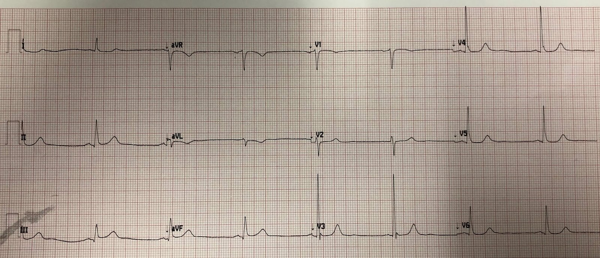
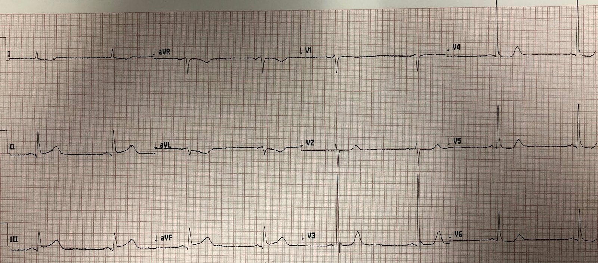
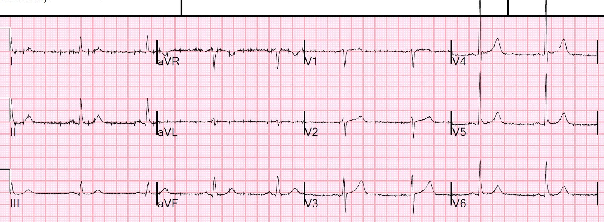
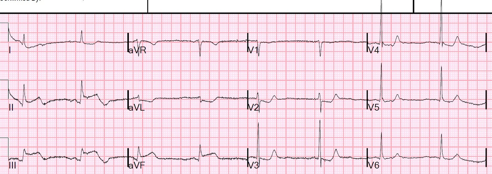
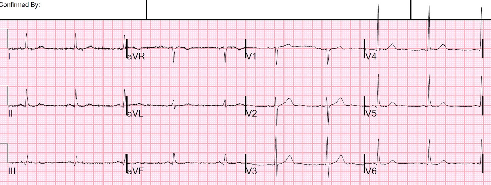
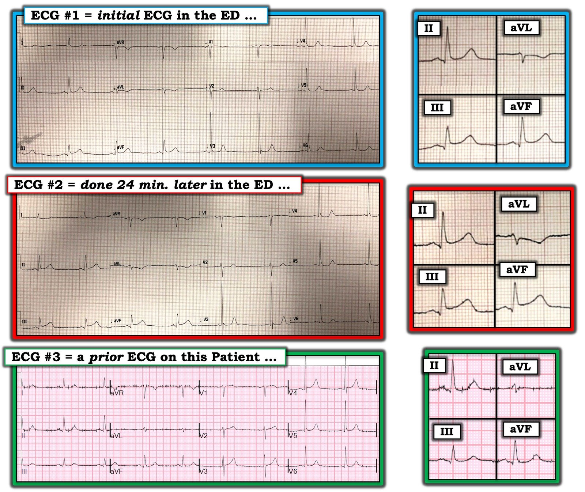

23/06/2019 — 2 điện tâm đồ được nhắn tin cho tôi. ST chênh lên rất ít ở các chuyển đạo thành dưới. Điều đó quan trọng đến mức nào?
Bản dịch tiếng Việt của bài "2 ECGs texted to me. Minimal STE in inferior leads. How important is it?" – Dr. Smith’s ECG Blog. Giữ nguyên toàn bộ 7 hình ảnh của bản gốc.
2 điện tâm đồ này được nhắn tin cho tôi kèm lời nhắn “Tôi nghĩ là nhồi máu cơ tim cấp, nhưng bên tim mạch thì không.”
Tôi cho rằng đây là 2 điện tâm đồ liên tiếp:
Điện tâm đồ 1: (sau này được xác định là mốc thời gian ban đầu (time zero)):


Có một chút ST chênh lên (STE) ở II, III, aVF
Từ dưới 0.5 mm – 0.5 mm.
Có ST chênh xuống soi gương dưới 0.5 mm ở aVL, và sóng T đảo ngược
Và điện tâm đồ còn lại: (sau này được xác định là ở thời điểm 24 phút):


Một dấu hiệu rất có giá trị là các đoạn ST ở V2-V6:
ST chênh xuống đã xuất hiện ở V2-V6, dốc xuống ở V4-V6.
Dù rất ít, đây là dữ liệu bổ trợ rất đặc hiệu cho chẩn đoán nhồi máu cơ tim trên điện tâm đồ.
Đây là câu trả lời của tôi:
“Trông giống nhồi máu cơ tim…Bệnh nhân có đau ngực không?”
Bệnh sử:
Ngất tại phòng khám, có đau ngực mơ hồ.
Bệnh sử không rõ ràng lắm, nên chúng tôi tìm một điện tâm đồ cũ:


Điều này khiến các điện tâm đồ kia có giá trị chẩn đoán.
Bên tim mạch muốn cho bệnh nhân nhập viện, nhưng không thấy bằng chứng nhồi máu cơ tim cấp và không muốn kích hoạt phòng thông tim (cath lab).
Dù vậy, đồng nghiệp của tôi và tôi thống nhất rằng nên kích hoạt phòng thông tim, nên anh ấy đã kích hoạt.
Ngay trước khi chuyển đi, một điện tâm đồ khác được ghi ở thời điểm 71 phút, trước khi thông tim:


Bệnh nhân bị ngừng tim do rung thất trước khi chụp mạch vành, và đã được hồi sức thành công.
Chụp mạch vành: tắc 100% RCA đoạn xa.
Sau thông tim, ngày hôm sau:


ST chênh lên đã hồi phục.
Troponin đỉnh 47.4 ng/mL (nhồi máu cơ tim diện rộng)
Siêu âm tim: Rối loạn vận động thành khu trú – thành dưới, EF 60%.
Những điểm cần học:
1. Trong các thử nghiệm tiêu sợi huyết ban đầu (những thử nghiệm tái tưới máu duy nhất có đối chứng giả dược!), đặc biệt là GISSI-1, điều trị nhồi máu cơ tim thành dưới bằng streptokinase không có tác dụng đo lường được lên kết cục tử vong. Ở đây ta thấy một nhồi máu cơ tim thành dưới trông có vẻ rất nhỏ trên điện tâm đồ, mà chỉ về sau mới trở nên lớn. Bệnh nhân ngừng tim và có troponin rất cao. Vì vậy, đừng để bị đánh lừa bởi một nhồi máu cơ tim thành dưới trông có vẻ nhỏ.
2. Hãy ghi các điện tâm đồ liên tiếp.
3. So sánh với điện tâm đồ cũ.
4. Bạn phải kiên quyết thúc đẩy để đưa những bệnh nhân cần thiết đến phòng thông tim.
5. Các bác sĩ tim mạch phải nắm một khối lượng kiến thức khổng lồ, trải rộng trên một chuyên ngành rất lớn. Họ không phải lúc nào cũng có thời gian để học những điểm tinh tế của OMI trên điện tâm đồ.
6. Bạn phải là chuyên gia!!

===================================
Bình luận của KEN GRAUER, MD (23/6/2019):
===================================
Định nghĩa của từ “tinh tế” (subtle) là — tinh vi hoặc chính xác đến mức khó phân tích hay mô tả (đặc biệt khi nói về một thay đổi). Sự tinh tế là “chủ đề” của ca này.
- Cho rõ ràng — tôi đã ghép 3 điện tâm đồ đầu tiên của ca này vào Hình 1. Vì các dấu hiệu rất kín đáo — tôi đã phóng to một phức bộ ở các chuyển đạo II, III, aVF và aVL, rồi đặt ở bên phải mỗi bản ghi.


SUY NGHĨ của tôi về ĐIỆN TÂM ĐỒ #2 — Điện tâm đồ #2 được ghi chỉ 24 phút sau đó tại khoa cấp cứu. Một lần nữa — chuyển đạo V3 trông “lạc chỗ” — vì vậy tôi nghi ngờ bản ghi này được thực hiện bởi cùng một kỹ thuật viên điện tâm đồ đã ghi điện tâm đồ #1. Đáng tiếc — điều này có nghĩa là một số thông tin ở các chuyển đạo phía trước nhiều khả năng sẽ gây hiểu lầm. Tuy vậy — ít nhất trục mặt phẳng trán & hình thái QRS tổng thể là tương đương giữa điện tâm đồ #1 và #2 — nghĩa là việc so sánh từng chuyển đạo để đánh giá thay đổi qua các bản ghi liên tiếp sẽ có giá trị! Một lần nữa có nhịp chậm xoang. Tôi không thấy thay đổi đáng kể nào ở các chuyển đạo ngực giữa điện tâm đồ #1 và #2. Tôi thực sự nghĩ rằng có một thay đổi kín đáo nhưng quan trọng ở các chuyển đạo II, III, aVF và aVL giữa 2 bản ghi! Vì vậy tôi đã phóng to các chuyển đạo then chốt này để minh họa rõ hơn các dấu hiệu! Xem các ẢNH PHÓNG TO (BLOW-UPS, hình phóng đại) của các chuyển đạo II, III, aVF và aVL ở điện tâm đồ #1 và điện tâm đồ #2: Tôi nhận thấy mức độ ST chênh lên ở các chuyển đạo thành dưới trong ảnh phóng to của điện tâm đồ #2 nhiều hơn so với ở điện tâm đồ #1. Điểm mà tại đó đoạn ST bắt đầu đi lên có vẻ sớm hơn — gần như thể sóng T giờ đang cố “nâng” đoạn ST lên. Giờ đây dường như có một ít ST chênh xuống ở chuyển đạo aVL của điện tâm đồ #2 — và sóng T đảo ngược sâu hơn. Với tôi, “bức tranh” tổng thể của sóng ST-T ở chuyển đạo aVL giờ trông giống hơn nhiều với một “hình soi gương” (tức là thay đổi soi gương) của sóng ST-T chênh lên ở chuyển đạo III. ĐIỀU CỐT LÕI: Tôi cho rằng điện tâm đồ #2 cho thấy bằng chứng của thay đổi qua các bản ghi liên tiếp (tức là tiến triển) kín đáo nhưng thật sự ở mỗi chuyển đạo trong 4 chuyển đạo này — mà với tôi (khi xét đến bệnh sử), là chẩn đoán OMI thành dưới cấp cho đến khi chứng minh được điều ngược lại. ĐIỂM THEN CHỐT (PEARL): Những thay đổi tôi mô tả ở trên dễ nhận ra hơn nhiều trên ảnh PHÓNG TO. HÃY QUAY LẠI và xem lại một lần nữa toàn bộ 12 chuyển đạo của điện tâm đồ #2. Hình ảnh cần “khắc ghi” vào trí nhớ là bức tranh của 4 chuyển đạo này (II,III,aVF; aVL) khi xem cùng nhau gợi ý OMI thành dưới cấp cho đến khi chứng minh được điều ngược lại. Trong bối cảnh đó — ST dẹt ở chuyển đạo V2 cũng đáng lo ngại không kém. Xét thêm ST thẳng đuỗn ở các chuyển đạo V3 đến V6 + đoạn ST võng xuống ở chuyển đạo I — điều này tạo nên tổng cộng 10 trên 12 chuyển đạo cho thấy bất thường sóng ST-T trên điện tâm đồ #2!
NHƯ gấm thêm HOA (Icing on the Cake): Đến lúc này — người ta đã tìm được một điện tâm đồ cũ của bệnh nhân này ( = ĐIỆN TÂM ĐỒ #3). So sánh từng chuyển đạo hình ảnh của điện tâm đồ #3 (cả trên bản ghi 12 chuyển đạo đầy đủ lẫn trên ảnh phóng to) — với các dấu hiệu ta thấy ở điện tâm đồ #1 và #2 — hãy LƯU Ý những điều sau: Không có ST chênh lên ở các chuyển đạo thành dưới trên bản ghi trước đó ( = điện tâm đồ #3). Hoàn toàn không có sóng T đảo ngược ở chuyển đạo aVL. Chuyển đạo V2 trên điện tâm đồ cũ ( = điện tâm đồ #3) cho thấy đoạn ST dốc lên. Do đó, đoạn ST thẳng quá mức ở chuyển đạo V2 của điện tâm đồ #1 và 2 đúng là một dấu hiệu mới. ST thẳng đuỗn mà ta thấy ở các chuyển đạo V3 đến V6 trên điện tâm đồ #1 và #2 không có trên bản ghi cũ. ĐIỀU CỐT LÕI: Mọi nghi ngờ về việc các thay đổi qua các bản ghi liên tiếp ở điện tâm đồ #1 và #2 có phải là cấp tính hay không lẽ ra phải được loại bỏ hoàn toàn khi đã có bản ghi cũ ( = điện tâm đồ #3). T.B. (P.S.) — Các sóng q nhỏ ở thành dưới đã có sẵn trên bản ghi cũ ( = điện tâm đồ #3). Vì vậy chúng không phải là hậu quả của biến cố cấp tính này. T.B.T.B. (P.P.S.) — Lưu ý rằng sự tăng tiến sóng R hợp lý hơn nhiều được thấy trên điện tâm đồ #3. Điều này củng cố nghi ngờ của tôi về một vấn đề với vị trí đặt chuyển đạo V3 trên điện tâm đồ #1 và #2.